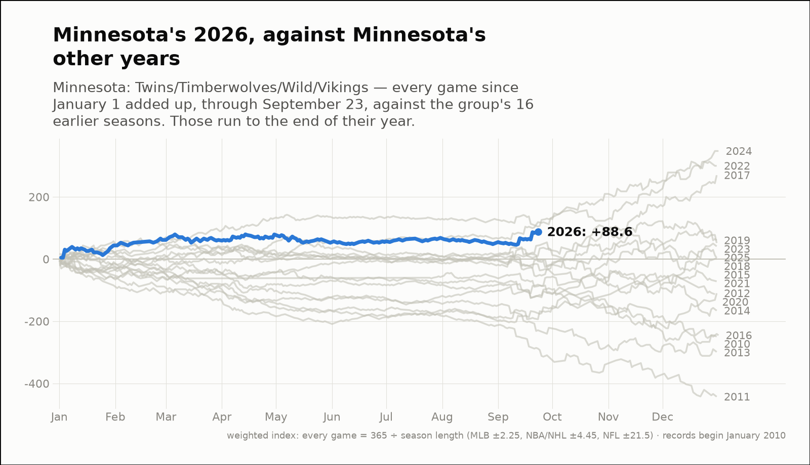
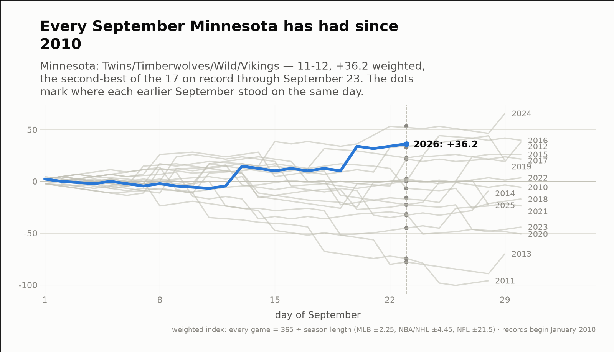
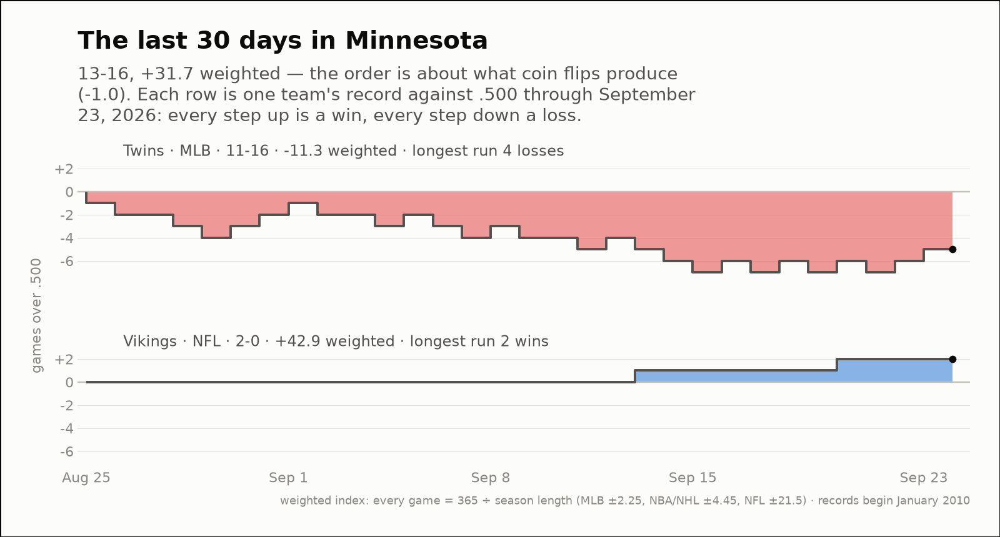

City of the day — Minnesota
Minnesota: Twins/Timberwolves/Wild/Vikings
- 2026 so far
- 139-135, +88.6 weighted over 274 games; longest run 8 straight wins
- Order of results
- about as clumped as coin flips (-0.9)
- Earlier seasons (full-year weighted)
- 2010 -249.3, 2011 -442.7, 2012 -110.0, 2013 -298.8, 2014 -165.9, 2015 +0.6, 2016 -245.2, 2017 +269.8, 2018 +3.5, 2019 +60.2, 2020 -113.1, 2021 -71.7, 2022 +299.9, 2023 +51.6, 2024 +347.5, 2025 +41.0
- Last 30 days
- 13-16, +31.7 weighted; longest run 4 straight losses
- Window opens
- August 25, 2026
- September 2026 through day 23
- 11-12, +36.2 weighted — the second-best of the 17 on record
- Same September in earlier years (same stretch)
- 2010 -15.9, 2011 -74.5, 2012 +21.5, 2013 -77.9, 2014 -32.7, 2015 +2.3, 2016 +22.7, 2017 +0.0, 2018 -6.8, 2019 +32.7, 2020 -22.7, 2021 -45.2, 2022 -22.5, 2023 -31.7, 2024 +53.1, 2025 +1.2
| Team | Last 30 days | Weighted | Longest run |
|---|---|---|---|
| Twins | 11-16 | -11.3 | 4 straight losses |
| Vikings | 2-0 | +42.9 | 2 straight wins |


